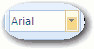
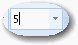
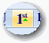
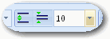
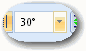

Creating Text Labels
You can add an unlimited number of text labels and legends to any graph page. SigmaPlot supports:
- All TrueType, PostScript, and other fonts installed on your system.
- Multiple lines of text aligned left, right, or centered, with adjustable line heights.
- Mixed fonts and other attributes within a single label.
- Multiple levels of superscripting and subscripting.
- Rotation of text in single degree increments.
- Color using up to 16.7 million different combinations of red, green, and blue
To create text labels or legends on a page:
- Select and view the page window.
-
Click the Graph
Page
tab, and then in the Tools group, click
Text.
This places you into text mode until another mode or tool is selected.
- Click the page where you want the label to begin. A text box appears.
-
Select the font, character size, and other starting character
attributes in the Text group.
The following table outlines the functions of each button. These buttons act on selected text, or set the format for following text.
Control Function  Set Font  Set Size 
Normal Format Bold Italic Underlined  Superscript One Level Subscript One Level Toggle to Greek (Symbol) Font Left Align Center Align Right Align  Line Spacing (Multiline Paragraph Only)  Rotation Color Legend Symbol The Rotation, Alignment, and Line Spacing options affect the entire label, not just the selected text, and Line Spacing is a minimum spacing control, not fixed. If you change the height of characters by changing font sizes or by adding superscripts or subscripts, the line height adjusts automatically.
Tip: Using the Default Text Properties you can set default text label attributes by opening the Text Properties dialog box with no labels selected.Tip: In addition to using the Greek Characters button to add a Greek symbol to text, you can also select existing text and choose Symbol as the font type in the Text Properties dialog box. - To add legend symbols to your text, click Symbols. The Symbol palette appears.
- Type your label.